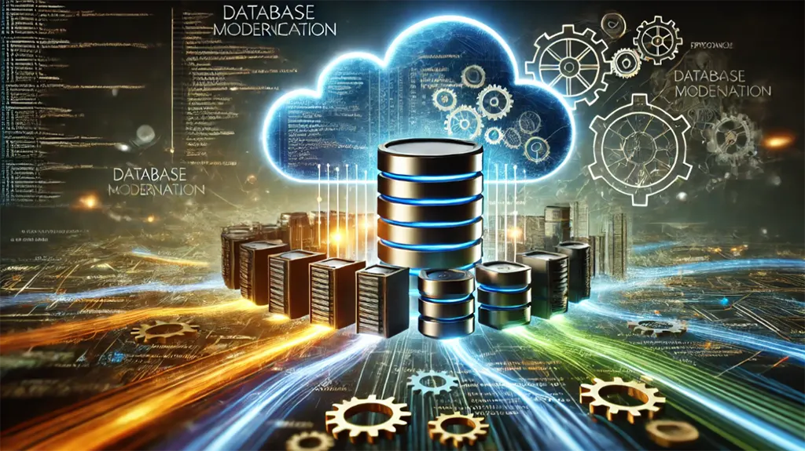

مفاهیم مقدماتی پایگاههای داده رابطهای (SQL)، پایگاههای داده غیررابطهای (NoSQL) و سیستمهای کشینگ (Redis)
پایگاههای داده (Databases) یکی از مهمترین بخشهای سیستمهای نرمافزاری هستند که وظیفهی ذخیره، مدیریت و بازیابی اطلاعات را بر عهده دارند. این پایگاهها به دو دستهی اصلی رابطهای (SQL) و غیررابطهای (NoSQL) تقسیم میشوند. همچنین، سیستمهای کشینگ مانند Redis برای بهینهسازی عملکرد ذخیره و بازیابی دادهها مورد استفاده قرار میگیرند. در این مقاله، مفاهیم این سه تکنولوژی را بهطور کامل بررسی خواهیم کرد و با ارائهی مثالها و کدهای نمونه، درک آنها را سادهتر خواهیم کرد.
۱. پایگاههای داده رابطهای (SQL Databases)
پایگاههای داده رابطهای (Relational Databases) از یک ساختار جدولمحور استفاده میکنند که دادهها را در قالب ردیفها و ستونها ذخیره میکند. هر جدول شامل کلید اولیه (Primary Key) و میتواند با جداول دیگر از طریق کلید خارجی (Foreign Key) مرتبط شود.
ویژگیهای پایگاههای داده رابطهای:
| ویژگی | توضیحات |
|---|---|
| ساختارمند و سازمانیافته | دادهها در قالب جداول مرتب و دارای روابط مشخص هستند. |
| استفاده از زبان SQL | برای جستجو، درج، حذف و بهروزرسانی دادهها از Structured Query Language (SQL) استفاده میشود. |
| پشتیبانی از ACID | از ویژگیهای Atomicity، Consistency، Isolation، Durability برای تضمین امنیت و صحت تراکنشها بهره میبرد. |
| مناسب برای | سیستمهای بانکی، مالی، فروشگاههای آنلاین و پروژههایی که نیاز به یکپارچگی دادهها دارند. |
نمونهای از پایگاه داده SQL (MySQL) و کدهای مرتبط:
ایجاد یک جدول در MySQL
CREATE TABLE Users (
id INT PRIMARY KEY AUTO_INCREMENT,
name VARCHAR(100) NOT NULL,
email VARCHAR(100) UNIQUE NOT NULL,
created_at TIMESTAMP DEFAULT CURRENT_TIMESTAMP
);
افزودن داده به جدول
INSERT INTO Users (name, email) VALUES ('علی رضایی', 'ali@example.com');
دریافت داده از جدول
SELECT * FROM Users;
۲. پایگاههای داده غیررابطهای (NoSQL Databases)
پایگاههای داده NoSQL برای ذخیرهسازی دادههایی طراحی شدهاند که به شکل ساختارمند در جداول قرار نمیگیرند. این پایگاهها مناسب دادههای حجیم، توزیعشده و نامتجانس هستند.
ویژگیهای پایگاههای داده NoSQL:
| ویژگی | توضیحات |
|---|---|
| بدون نیاز به ساختار ثابت | دادهها میتوانند در قالبهای مختلف مانند JSON یا سندی ذخیره شوند. |
| مقیاسپذیری بالا | توانایی پردازش حجم بالای دادهها در سیستمهای توزیعشده. |
| عملکرد بالا | برای خواندن و نوشتن دادهها با سرعت بالا بهینه شده است. |
نمونهای از پایگاه داده NoSQL (MongoDB) و کدهای مرتبط:
ایجاد و درج داده در MongoDB
{
"name": "علی رضایی",
"email": "ali@example.com",
"created_at": "2024-03-18T12:00:00Z"
}
درج داده در پایگاه داده MongoDB با استفاده از JavaScript
db.users.insertOne({
name: "علی رضایی",
email: "ali@example.com",
created_at: new Date()
});
۳. سیستمهای کشینگ (Caching Systems) و Redis
کشینگ (Caching) فرآیندی است که دادههای پرکاربرد را در حافظهی سریع (RAM) ذخیره میکند تا دسترسی به آنها سریعتر شود. این روش برای افزایش سرعت پردازش و کاهش فشار روی پایگاه داده اصلی استفاده میشود.
مزایای استفاده از کشینگ:
| مزایا | توضیحات |
|---|---|
| افزایش سرعت بارگذاری صفحات | اطلاعات پرکاربرد از حافظهی کش خوانده میشوند. |
| کاهش بار روی پایگاه داده | بهینهسازی عملکرد سیستمهای با درخواست بالا. |
| بهبود تجربهی کاربری | زمان پاسخگویی سریعتر برای کاربران. |
Redis: سریعترین سیستم کشینگ
Redis یک پایگاه داده کلید-مقدار (Key-Value) است که دادهها را در حافظه (RAM) ذخیره میکند. این پایگاه داده برای کاربردهایی مانند چت آنلاین، مدیریت نشست کاربران و پردازش صفها بسیار مناسب است.
نمونهای از کشینگ داده با Redis
ذخیره داده در Redis
SET user:1 "علی رضایی"
بازیابی داده از Redis
GET user:1
جمعبندی
در این مقاله، سه مفهوم کلیدی پایگاههای داده بررسی شد:
- SQL: پایگاه دادههای رابطهای با ساختار جدولی و پشتیبانی از ACID.
- NoSQL: پایگاه دادههای غیررابطهای برای ذخیرهی دادههای انعطافپذیر و حجیم.
- Redis: یک سیستم کشینگ سریع برای افزایش سرعت پردازش دادهها.
✅ اگر دادههای شما ساختاریافته و نیازمند یکپارچگی بالا است، از SQL استفاده کنید.
✅ اگر دادهها متنوع، بزرگ و بدون ساختار مشخص هستند، NoSQL گزینهی بهتری است.
✅ اگر نیاز به افزایش سرعت پردازش دادههای پرکاربرد دارید، Redis یک راهکار عالی است.
انتخاب مناسب بین این فناوریها بستگی به نیازهای پروژهی شما دارد. برای اطلاعات بیشتر، از لینکهای ارائهشده استفاده کنید.